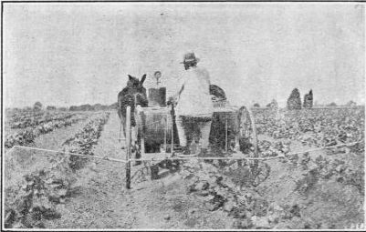

438. Fertilizing Cucumber
Description
This section is from the book "Vegetable Gardening", by Ralph L. Watts. Also available from Amazon: Vegetable Gardening.
438. Fertilizing Cucumber
Large yields of high quality are greatly favored by a constant, unchecked growth, accomplished by providing proper physical as well as chemical properties of the soil. The roots attain the best development in soils abounding in vegetable matter. For this reason, stable manures have been found particularly valuable. They should be well decayed, unless applied a month or more in advance of planting. If the supply of manure is abundant, it may be applied broadcast, but it will go farther and produce better results in soils of moderate fertility when applied in the hills or furrows. A popular and successful practice in some trucking sections is to open the furrows about a month before it is time to plant, distribute the manure, turn back the soil and mix soil and manure thoroughly with a convenient form of cultivator before planting. When planting in hills a shovelful or two is placed in each hill and often mixed with the soil.
Excessive amounts of nitrogen must be avoided in the commercial fertilizers. Four per cent is probably as much as should be used on any soil, but additional applications of nitrate of soda may be made if necessary. The mineral elements are needed in liberal supplies to encourage fruitfulness. Eight per cent of phosphoric acid and 10 per cent of potash will meet the requirements on most soils. From 1,000 to 1,500 pounds of complete fertilizer are common amounts to use on an acre. Fertilizer may be applied broadcast before planting or mixed in the hills or furrows. When manure is used in furrows an excellent plan is to incorporate the fertilizer by the same mixing.
439. Planting
Planting should not occur until the ground is warm and there is practically no danger of frost. Some of the most extensive commercial growers plant seed at two different depths, the shallow plantings coming on first, and if these are killed or damaged by frost the later ones will be likely to escape. For the pickling crop in the North, June is a popular month for planting. Truckers and market gardeners often plant at intervals of 10 days or two weeks to secure a succession of cucumbers. Whatever the time or system of planting, seed should be used freely to make certain of a good stand. The surplus plants are easily pulled or chopped out with a hoe. The advantage of selection is an important factor.
Planting in hills was the universal practice some years ago and is still preferred by many growers. In good soils the distances between hills should be not less than 5x5 feet, and some prefer planting 6x6. In lighter and moderately fertile soils, 4x5 feet may be permissible, but such close planting is not generally approved. When planted in check rows, three or four plants in a hill, the cultivator can be used in both directions. This materially reduces the expense of tillage. In recent years the drill system of planting has become popular in prominent trucking sections. The seeds are usually sown with a drill and the plants thinned to a foot or more apart. This system is probably more favorable to the development of each individual plant; there is less interference of roots as well as vines than when planted in hills, and power sprayers can be used to better advantage.
The young plants are not only tender to frost, but cold winds greatly retard their growth. To overcome this difficulty the rows are sometimes alternated with bush beans. The protection thus afforded to the cucumber is of great value. Another plan is to sow rye in the fall, and in the spring prepare and plant strips of the required width; the remaining areas of rye may be cut and the ground cultivated when the weather becomes warmer and when there is no need of further protection.
440. Cultivation
Tillage should be Continued as late in the season as possible without injury to the vines. The use of broad hoes in the rows and some hand weeding are often necessary to keep the fields clean.
441. Marketing
Cucumbers for slicing should be not less than 6 inches long when picked and all specimens removed before they begin to turn white or yellow. Picklers are gathered when of the size the grower desires. Gathering is the heaviest expense connected with the crop. The small cucumbers are hard to see and large forces of children cannot be trusted to do the work. The fields are looked over two or three times a week in order to find the picklers before they become too large. When wanted for slicing it is necessary to harvest almost as frequently, to secure uniformity in size and degree of maturity.
Grading
Grading is necessary to secure the best returns. A great variety of packages is used in handling this crop. For local markets, upright half-bushel baskets are popular and several forms of crates or boxes are in common use. For shipping, bushel and half barrel hampers (Figure 48) are employed in the large trucking sections of the South. In Texas and perhaps in some other southern states the crop is often loaded in bulk in standard refrigerator cars. A false floor is made of boards and 2x4 pieces, plenty of space being allowed between the boards. Another floor is made about midway between the first and the roof of the car, and supported by 2 x 4 posts. Six hundred bushels may be loaded in a car. They generally arrive in the northern markets in first-class condition.
442. Yields And Returns
Yields vary from 100 to 500 bushels an acre, but 200 half-barrel hampers is considered a good crop. Prices range from 50 cents to $2 a bushel or hamper. The early picklers are sometimes sold on local markets by the dozen, 10 to 25 cents being common prices. A return of $300 an acre for slicing cucumbers is sometimes obtained, although average receipts are much lower. Picklers produce from three to nine tons an acre, and the price probably averages $15 a ton.
443. The Striped Cucumber Beetle (Diabrotica Vittata)
The Striped Cucumber Beetle (Diabrotica Vittata), the most destructive insect pest of the cucumber, is described by Chittenden as follows: "The beetle measures about 2-5 inch in length. Its color is yellow above, with black head and elytra longitudinally striped. The egg is lemon yellow. The larva is a slender, white, wormlike creature, with brown head, anal and thoracic plate. When mature it measures about 3-10 inch, this being about 10 times its width. The species is indigenous and inhabits the entire eastern United States".
The beetles are particularly destructive to the young plants, but also feed on the old plants as well as on the fruit. The larvae frequently cause heavy losses by working on the roots, and the beetles are effective carriers of the dreaded bacterial disease known as "cucurbit wilt".
The beetles appear in April or May, and feed on the young plants as soon as they are up. Egg laying begins promptly and the larvae feed on the stems, many of them entering when the plants are greatly weakened if not killed. When cold weather approaches, the beetles seek shelter in which to hibernate.
Fig. 82. power sprayer for cucurbits.
Various plans have been suggested to control this pest. As poisons are not successful, preventive measures are usually employed. Covering the hills with squares of mosquito netting is efficacious, but troublesome and expensive in a large field. If the plants are started under glass and set in the field when four weeks old, the danger of loss will not be so great. Seed should be used liberally, to make allowance for insect depredations. Air-slaked lime is often an excellent repellent when sprinkled on the plants; tobacco dust may be used in the same way.
444. Diseases
Among the diseases of cucumbers, downy mildew, leaf blight and anthracnose are the most important. Bordeaux mixture is the chief fungicide used in combating the diseases of cucumbers. Applications should begin when the plants start to vine and be repeated at intervals of 10 days or less at critical times. Figure 82 shows an effective three-row sprayer.
Continue to:
Tags
plants, crops, gardening, cultivated, harvesting, food ,greenhouses, fertiliser, vegitables